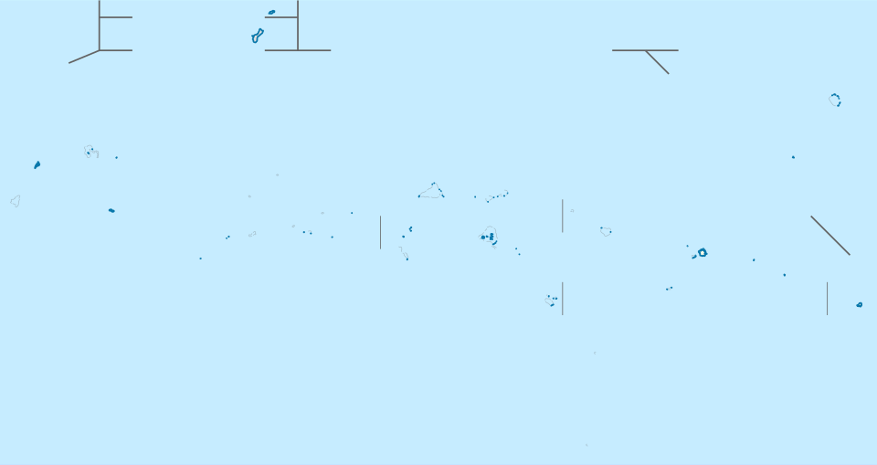
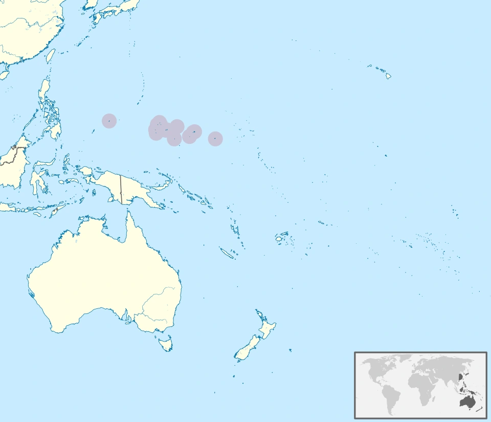
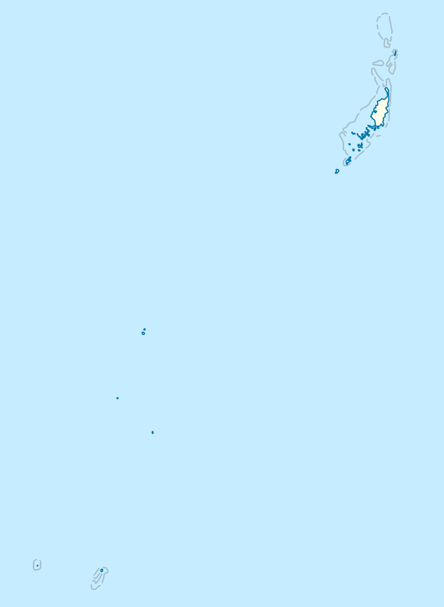
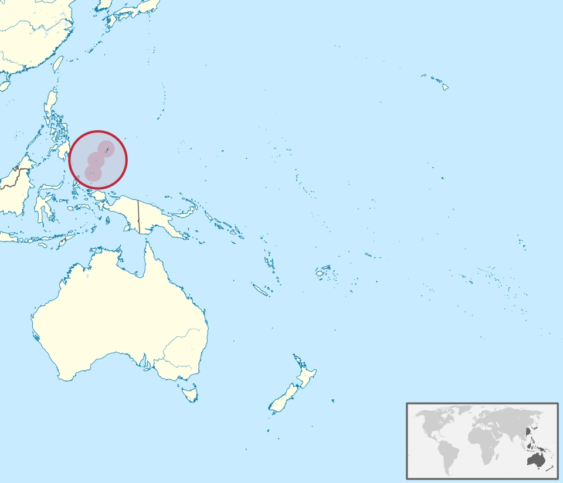
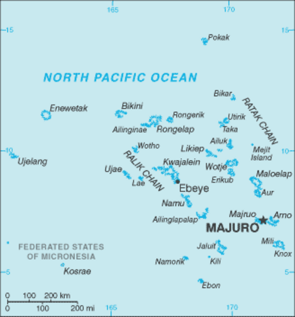
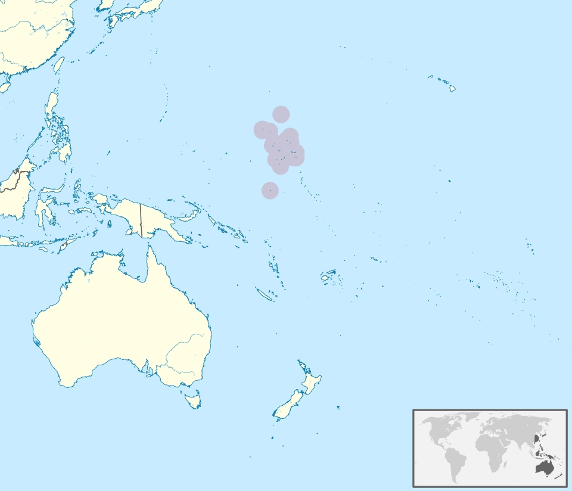
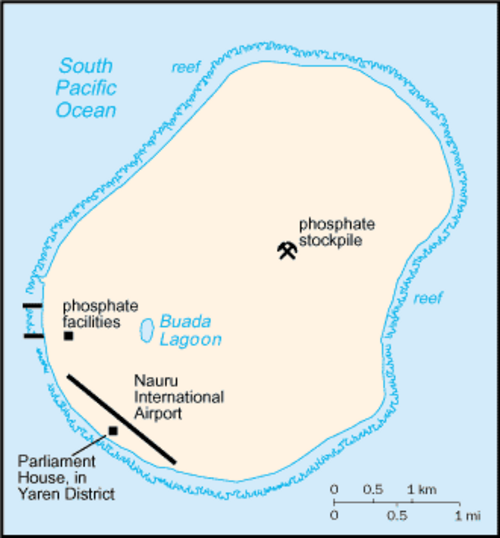
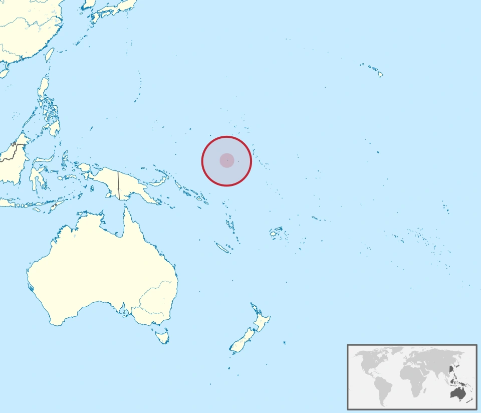
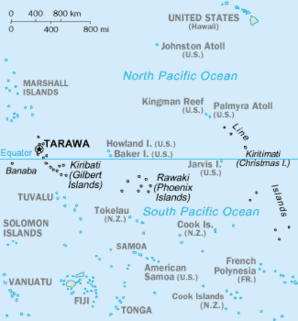
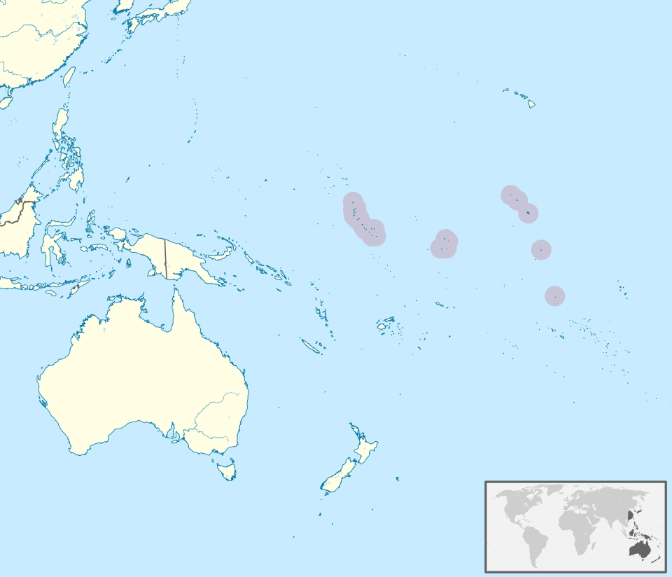

密克罗尼西亚 · FM
密克罗尼西亚联邦Federated States of Micronesia 首都 帕利基尔 Palikir
国家／地区地图 · 看轮廓与邻近位置 
大洋洲位置图 · 看大洲方位 
点击地图可放大 · 国家图可能只显示地形与边界，首都方位见下文；小岛位置图可能使用圆圈或插图提示。
认识国家／地区 密克罗尼西亚联邦位于西太平洋，由雅浦、丘克、波纳佩和科斯雷四个州组成。岛屿分散在广阔海域，海洋联系比陆地距离更能说明国家结构；国名与地理上的密克罗尼西亚区域不同。
认识首都／城市 帕利基尔位于波纳佩岛内陆，1989年成为联邦首都，行政建筑集中在规划区域。科洛尼亚是同岛的重要城镇与旧首都；把“联邦行政中心在岛内、旧城在海边”作为区分线索。
记忆钩子 密联四州，波纳佩岛内陆帕利基尔。
容易混淆 密克罗尼西亚是区域名；密克罗尼西亚联邦是一个国家。
本条资料来源与地图许可 国家地图：File:Federated States of Micronesia location map.svg CC BY 3.0
大洲位置图：File:Micronesia in Oceania.svg CC BY-SA 3.0
国家／地区地图 · 看轮廓与邻近位置 
大洋洲位置图 · 看大洲方位 
点击地图可放大 · 国家图可能只显示地形与边界，首都方位见下文；小岛位置图可能使用圆圈或插图提示。
认识国家／地区 帕劳位于西太平洋、菲律宾以东，国土由巴伯尔道布岛及众多较小岛屿组成。海岛、珊瑚礁与海洋生态特色鲜明；主要人口城市与新首都所在地并不重合。
认识首都／城市 恩吉鲁穆德位于巴伯尔道布岛的梅莱凯奥克州，2006年取代科罗尔成为首都。它以政府建筑群为核心，规模小；资料中的“Melekeok”有时指州或附近聚落，应与具体首都名分清。
记忆钩子 帕劳大岛建新都，恩吉鲁穆德。
容易混淆 科罗尔是旧首都；梅莱凯奥克州与新都名称层级不同。
本条资料来源与地图许可 国家地图：File:Palau location map.svg CC BY-SA 3.0 de
大洲位置图：File:Palau in Oceania.svg CC BY-SA 3.0
密克罗尼西亚 · MH
马绍尔群岛Marshall Islands 首都 马朱罗 Majuro
国家／地区地图 · 看轮廓与邻近位置 
大洋洲位置图 · 看大洲方位 
点击地图可放大 · 国家图可能只显示地形与边界，首都方位见下文；小岛位置图可能使用圆圈或插图提示。
认识国家／地区 马绍尔群岛位于北太平洋，由两列环礁和岛屿组成。陆地面积较小却分布在广阔海域，海洋交通和核试验历史都是认识国家的重要背景；地图不能只看主岛比例。
认识首都／城市 马朱罗指首都所在的环礁及其城市区域，行政和商业活动主要集中在环礁东部。细长岛带环抱潟湖，城市形态不同于大陆首都；把“环礁上的马朱罗”当作核心图像即可。
记忆钩子 马绍尔群岛，马朱罗环礁。
容易混淆 首都是环礁城市区域，不是一块大大陆上的单点。
本条资料来源与地图许可 国家地图：File:Marshall Islands-CIA WFB Map.png
大洲位置图：File:Marshall Islands in Oceania.svg CC BY-SA 3.0
政府所在地 无正式首都；亚伦为政府所在地 Yaren (government district)
国家／地区地图 · 看轮廓与邻近位置 
大洋洲位置图 · 看大洲方位 
点击地图可放大 · 国家图可能只显示地形与边界，首都方位见下文；小岛位置图可能使用圆圈或插图提示。
认识国家／地区 瑙鲁是赤道以南的太平洋小岛国，由一座珊瑚岛构成。磷酸盐开采历史显著影响内陆地貌，居民多沿海岸分布；它的政府所在地问题不适合套用普通首都模式。
认识首都／城市 瑙鲁没有正式首都，议会和主要政府机构位于岛南部的亚伦区。常见表格为方便而填写Yaren，严格学习时应写“亚伦为政府所在地”，避免把行政区说成依法指定的首都城市。
记忆钩子 瑙鲁无正式首都，政府在南部亚伦区。
容易混淆 亚伦是行政区与政府所在地，首都栏需带说明。
本条资料来源与地图许可 国家地图：File:Nauru-CIA WFB Map.png
大洲位置图：File:Nauru in Oceania.svg CC BY-SA 3.0
国家／地区地图 · 看轮廓与邻近位置 
大洋洲位置图 · 看大洲方位 
点击地图可放大 · 国家图可能只显示地形与边界，首都方位见下文；小岛位置图可能使用圆圈或插图提示。
认识国家／地区 基里巴斯位于中太平洋，包括吉尔伯特、菲尼克斯和莱恩三组岛屿。岛群跨度很大，跨越赤道两侧；日期变更线调整后的时间安排，也是理解其分散地理的线索。
认识首都／城市 南塔拉瓦位于塔拉瓦环礁南部，是多个相连岛段构成的行政与城市带。政府机构分布在拜里基等地点，因此旧表格有时只写某一岛段名；记首都时使用南塔拉瓦这一整体名称。
记忆钩子 基里巴斯跨度广，政府集中南塔拉瓦。
容易混淆 拜里基是南塔拉瓦的组成地点，不能忽略整体城市带。
本条资料来源与地图许可 国家地图：File:Kiribati-CIA WFB Map.png
大洲位置图：File:Kiribati in Oceania.svg CC BY-SA 3.0